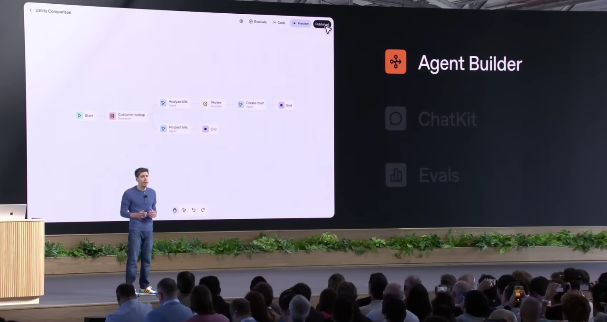

LEAD STORY

OpenAI DevDay highlights: AgentKit for scalable agents, GPT-5 Pro for precision in complex tasks. Photo: OpenAI
OpenAI DevDay: Enterprise Scaling for Agentic AI
OpenAI's DevDay announced apps in ChatGPT with an SDK, AgentKit for building production-grade agents with orchestration at scale, Sora 2 in the API for video integration, and GPT-5 Pro for tasks demanding high precision—emphasizing non-obvious shifts toward enterprise controls, reliable deployment, and workflow orchestration to mitigate pilot failures in large-scale AI adoption. Bottom line: These tools quietly address the brittleness of agents in real-world enterprise settings, enabling safer, more observable integrations that CXOs can scale without overhauling infrastructure.
OpenAI ↗
EDITOR'S NOTE
Due to Diwali vacations, I had taken a 2-week break from publishing. This edition covers the key developments over the last 3 weeks. This period uncovers subtle evolutions in AI toward governance-embedded agents, precision-optimized models, and hybrid execution frameworks—offering CXOs in enterprises, midmarket, SMBs, B2B startups, and ITeS companies pathways to derisk AI investments while unlocking productivity in niche, high-stakes workflows. OpenAI's AgentKit marks a pivotal shift from experimental pilots to production-ready orchestration—finally addressing the observability and reliability gaps that stalled enterprise adoption. The convergence of governance-embedded tooling and cost-optimized mini models signals that 2025 is when AI agents move from boardroom demos to operational reality.
Shashwat Ghosh
Cofounder & Fractional CMO
Helix Consulting
OpenAI DevDay Announcements
OpenAI launched apps in ChatGPT with SDK, AgentKit for production agents, Sora 2 API for video, GPT-5 Pro for precision, plus smaller models like gpt-realtime-mini and gpt-image-1-mini for cost efficiency in enterprise deployments.
OpenAI ↗
Microsoft Advances Agentic Productivity
Microsoft introduced Agent Mode in Word for interactive drafting and Excel for multi-step analyses, plus pre-built agents like Employee Self-Service for HR/IT, Surveys, App Builder, and Workflows—enhancing compliance and visibility for enterprise use.
Microsoft Tech Community ↗
Amazon Q3 Earnings Highlight AI Growth
Amazon reported $180B revenue, up 13%, with AWS growing at its fastest rate since 2022, driven by AI workloads.
CNBC ↗
Apple Sets Q4 Revenue Record
Apple achieved $102.5B in September-quarter revenue, up 8%, with iPhone and Services at all-time highs, signaling sustained demand amid ecosystem enhancements.
Apple Newsroom ↗
Anthropic Introduces Claude Skills
Anthropic unveiled Claude Skills—composable folders with instructions, scripts, and resources for specialized tasks, enabling agentic behavior with secure code execution and portability across apps, code, and API for enterprise customization.
Anthropic ↗
Windows 11 AI Upgrades
Microsoft enhanced Windows 11 with Copilot upgrades including voice activation, expanded Copilot Vision for screen analysis, Copilot Actions for real-world tasks, and Gaming Copilot—fostering seamless AI integration in desktop environments.
Reuters ↗
Ada AI Data Analyst
World's first autonomous AI data analyst that automates end-to-end data analysis, reporting, and recommendations across unified databases and APIs—ranked #1 on Product Hunt September 2025.
Product Hunt ↗
Peakflo AI Voice Agents
Humanlike AI voice agent platform for business operations—making/receiving calls 24/7, remembering context, triggering workflow automations, and operating in multiple languages for global scalability.
Product Hunt ↗
Salesforce Agentforce 360
Enterprise platform connecting humans, data, and autonomous agents in unified workflows—launched with pre-built agents for sales, service, and operations to accelerate agentic adoption.
Salesforce ↗
Microsoft Dragon Copilot for Nursing
AI-powered clinical documentation extended from physicians to nursing workflows, with partner extensibility enabling third-party AI apps to reduce burden and improve patient care.
Microsoft News ↗
🔒 Governance-Embedded Agents
Tools like AgentKit and Claude Skills incorporate observability and compliance primitives, enabling CXOs to deploy agents in regulated sectors without custom safeguards.
🎯 Precision Models for Niche Workloads
GPT-5 Pro's focus on accuracy over generality signals tailored AI for midmarket precision tasks, reducing error rates in financial or operational analytics.
💻 Hybrid Desktop-Cloud Execution
Windows 11 upgrades blend on-device Copilot with cloud actions, minimizing latency for SMBs and startups in data-sensitive operations.
🧩 Composable Skill Architectures
Anthropic's portable skills allow stacking expertise, fostering modular AI systems that B2B firms can customize without full retraining.
⚙️ Workflow Automation Expansion
Microsoft's pre-built agents for HR, surveys, and apps streamline ITeS processes, shifting from ad-hoc pilots to scalable enterprise rollouts.
💰 Cost-Optimized Mini Models
OpenAI's smaller variants like gpt-realtime-mini cut expenses by 70-80%, making advanced AI accessible for budget-conscious midmarket deployments.
📈 AI-Driven Ecosystem Resilience
Apple's record Services growth amid subtle enhancements hints at resilient AI integrations that bolster long-term revenue without overt disruption.
🔐 Secure Code Execution in Agents
Features enabling safe script running in agents address enterprise security concerns, paving the way for code-augmented AI in high-trust environments.
About the Author
Shashwat Ghosh is a Fractional CMO and AI GTM operator. As Co-founder at Helix Consulting, he helps B2B teams turn AI capability into revenue—positioning, pricing, sales enablement, and pipeline. He works hands-on with founders and GTM leaders to ship offers customers actually buy and scale repeatable growth.
Focus areas: AI GTM strategy, product positioning, ABM + sales orchestration, market entry, competitive plays, and thought leadership that's tied to pipeline—not pageviews.
Connect with Shashwat: